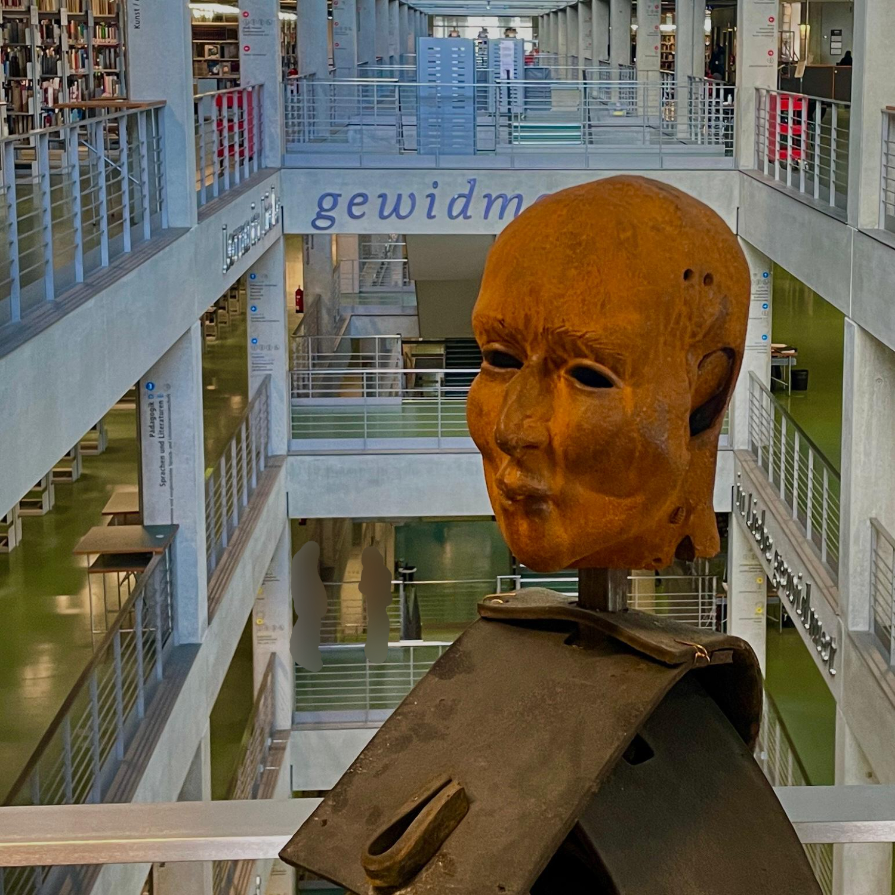
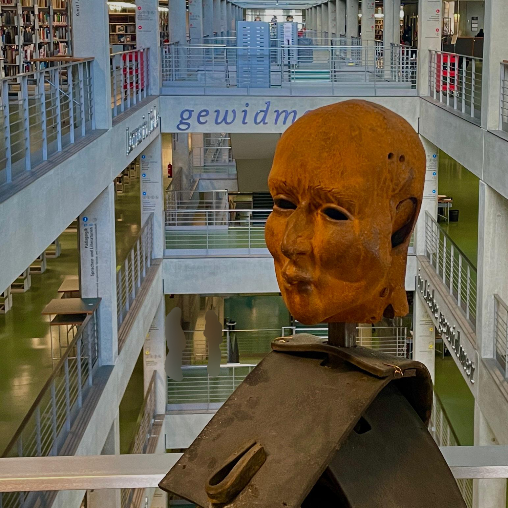
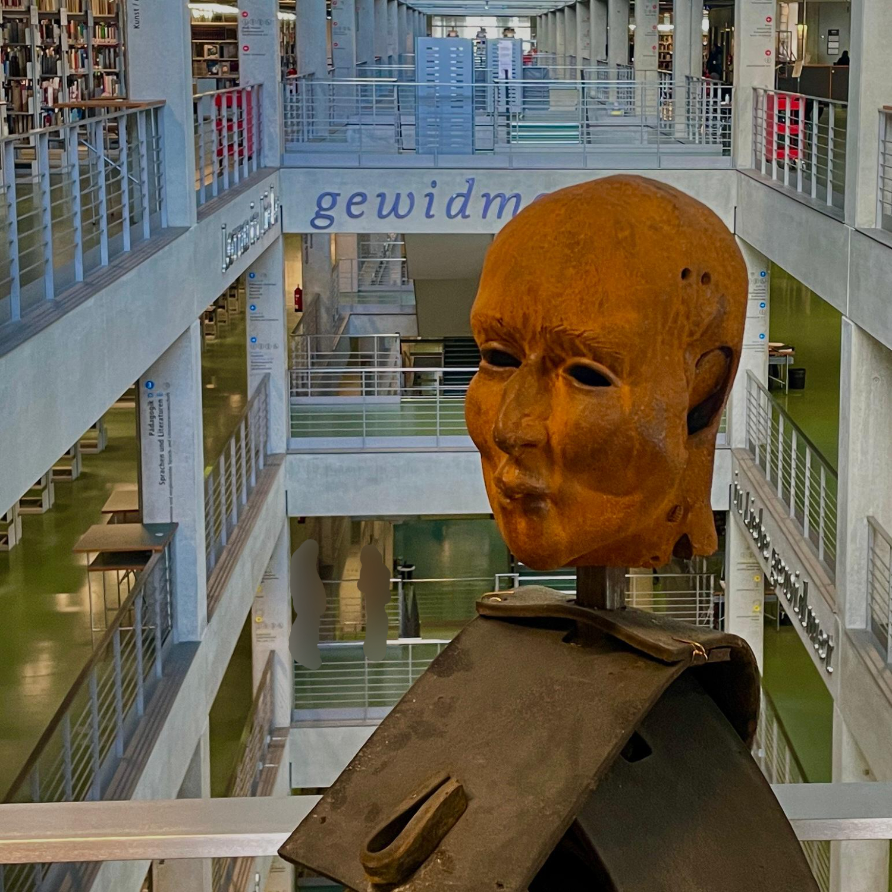

When: Monday-Friday 09:00-00:00, Saturday 10:00-00:00, Sunday Closed
What to do: You can study there like any other library. Lockers are on the ground floor—bring your own lock if you have one, or just take your backpack upstairs. There are computers you can log into with your TU account, and extra screens if you want a second monitor for your laptop. They’ve also got printers, but you’ll need your Mensa card to pay for that.

Next Magic Word: The next magic word is written on the wall behind the giant head. WRITE THE MAGIC WORD IN ALL CAPS. You’ll find the head in the main library.
Next location: The Main Cafeteria is located right next to the [EW] building, opposite of Steinplatz.
Library Information: During exam season, the main library can get really crowded. The smaller libraries, like the ones in the Math or Physics buildings, are usually quieter. You can check out all the TU libraries on this LINK. If you need to discuss something with your group, you can also book rooms in the library on this site.